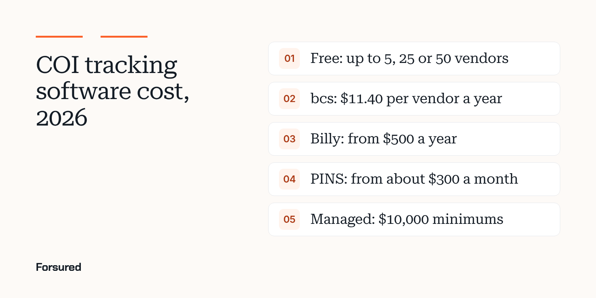
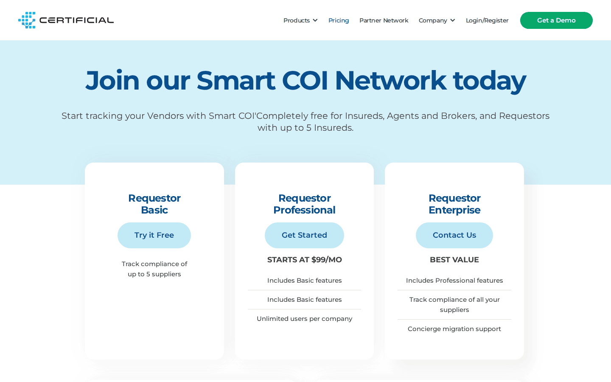
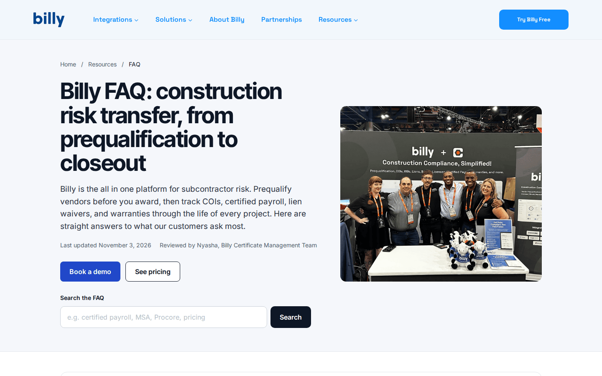
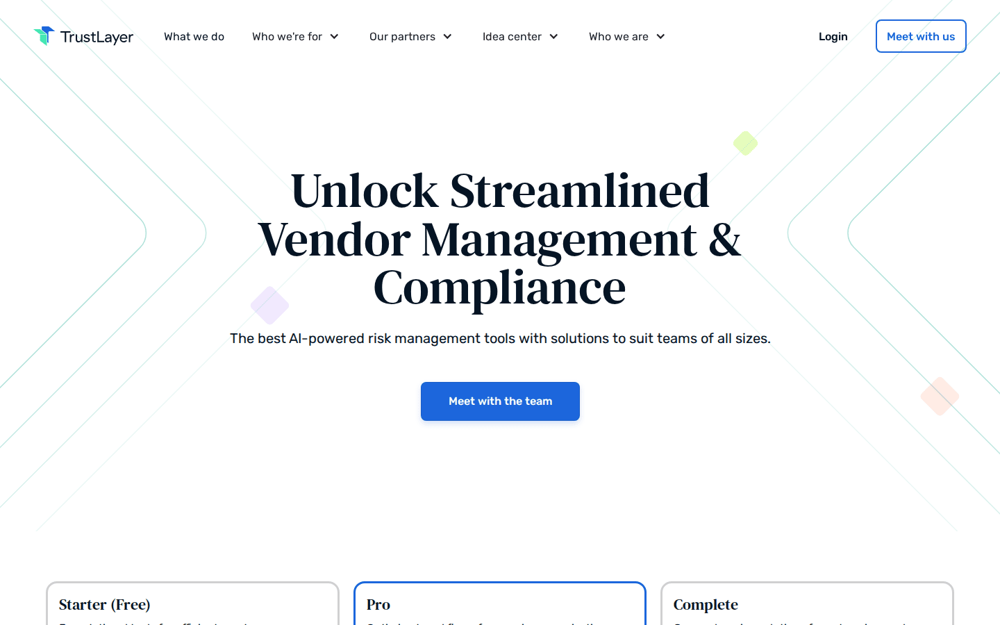
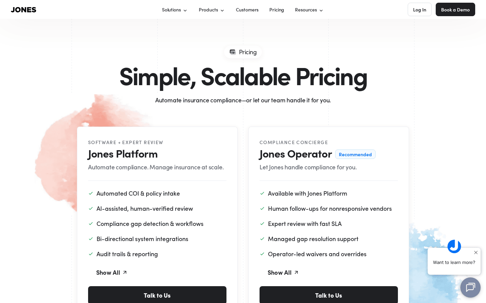
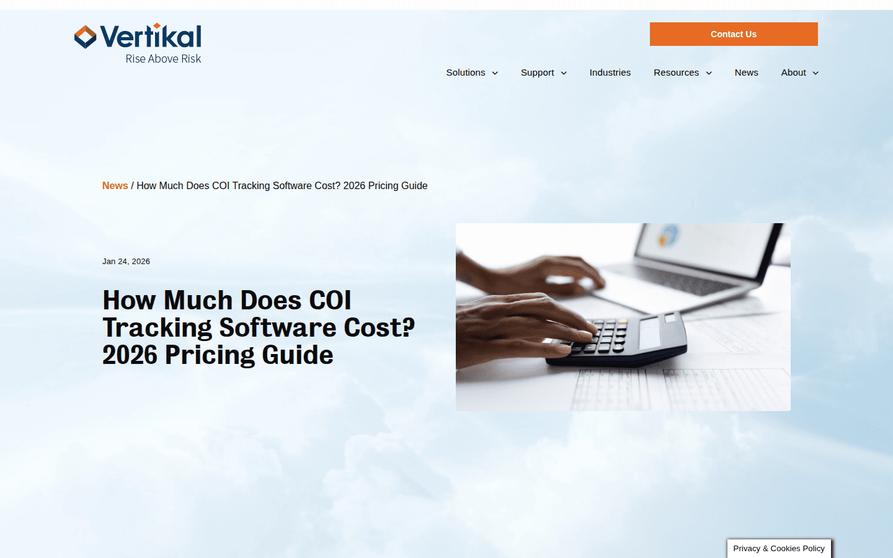

Blog / Buyer's guide
Buyer's guideCOI tracking software cost for construction in 2026: published prices compared
COI tracking software cost for construction runs from free, for up to 5, 25 or 50 vendors, to about $11 a vendor a year for self-service software and $10,000 a year minimums for managed tiers. Most published prices are per vendor. Forsured, Jones, illumend and TrustLayer's paid tiers quote on request.

You've been asked to price COI tracking software, and most vendor sites send you to a demo before they show a number. That makes it hard to set a budget, or to tell whether a quote is fair. COI tracking software cost depends on how many contractors you track, how much of the review the vendor's team does, and a few charges that show up late.
This guide is for general contractors' risk, compliance and finance teams putting a number on construction COI tracking, and for anyone comparing a quote they already have. It covers what vendors charge, what free COI tracking software includes, what managed COI tracking costs, and the extra costs worth asking about.
We used only prices vendors publish on their own pages, checked on Nov 17, 2026, and linked each one. Where a vendor doesn't publish a price, we say so. Then we ran the list prices at 50, 200 and 500 contractors, so you can see where the per vendor rate matters and where a minimum takes over.
Forsured is one of the vendors that quote on request, so we're not in the price table. They fit at the point where a team needs every contractor COI read against each project's requirements, with the broker in the fix. They don't sell a managed review service.
How much does COI tracking software cost in 2026?
COI tracking software cost for construction starts at free and runs to $10,000 a year or more. Three tools have free tiers: Certificial up to 5 suppliers, bcs up to 25 vendors and TrustLayer up to 50. Paid self-service software starts around $500 a year at Billy, $11.40 per vendor a year at bcs and about $300 a month at PINS Advantage. Managed tiers carry annual minimums of $7,500 to $10,000.
| Vendor | Free tier | Published price | Priced by | Charges your contractors? |
|---|---|---|---|---|
| bcs | Up to 25 vendors | $11.40 per vendor a year; full service from $17.80 with a $10,000 minimum | Per vendor | Not stated |
| Billy | Free trial | From $500 a year | Vendors tracked and plan | No fee for subs to apply |
| Certificial | Up to 5 suppliers | Professional from $99 a month | Plan | Insureds free |
| CertFocus (Vertikal) | None listed | $6 to $8 per vendor a year, $7,500 minimum | Per vendor | Optional vendor-pay plan |
| Jones | None listed | Quoted | Per record, per year | Never |
| PINS Advantage | None listed | From about $300 a month | Certificates tracked | Not stated |
| TrustLayer | Up to 50 vendors | Pro and Complete quoted | Vendors | Not stated |
What does COI tracking software cost at 50, 200 and 500 contractors?
Run the published rates at three sizes and the COI tracking software cost changes less than you'd expect, because minimums do most of the work. These are list prices for one year, before volume pricing, tax or anything a quote adds.
- 50 contractors. TrustLayer Starter is free. bcs self-service is $570. Billy starts at $500 and Certificial Professional at $1,188. PINS Advantage starts at about $3,600. bcs full service is $10,000, the minimum.
- 200 contractors. bcs self-service is $2,280, the same figure bcs uses on its own blog. CertFocus self-service works out to $1,200 to $1,600 at its rate, so the $7,500 minimum applies, plus implementation in year one. bcs full service is still $10,000, because 200 times $17.80 is $3,560.
- 500 contractors. bcs self-service is $5,700. bcs full service is still the $10,000 minimum, since 500 times $17.80 is $8,900. CertFocus full service at $13 to $29 per vendor location is $10,000 to $14,500.
The per vendor rate only starts to set the price on bcs full service above about 562 contractors. Below that, compare minimums, not rates.
Is free COI tracking software enough for a general contractor?
Free COI tracking software is enough for a small general contractor with a short list of trades, or for a trial before you buy. TrustLayer's 50-vendor limit is the most room in free COI tracking software today, and bcs gives every software feature up to 25 vendors. A GC with several active projects passes 50 contractors quickly. Free COI tracking software also leaves the reading to you: someone still checks each endorsement against project requirements.
What does managed COI tracking cost?
Managed COI tracking costs more because the vendor's team chases brokers and reviews documents for you. bcs full service starts at $17.80 per vendor a year with a $10,000 minimum, and Vertikal lists CertFocus full service at $13 to $29 per vendor location with a $10,000 minimum. Managed COI tracking makes sense when you don't have anyone to do the follow-up. Our guide to managed COI tracking services covers what the review actually includes.
What costs more than the per vendor price?
The per vendor price is rarely the whole bill. Four items change the total:
- Implementation. CertFocus lists $3,500 to $4,800. PINS Advantage includes onboarding. Ask everyone else.
- Integrations. bcs and PINS Advantage include Procore. TrustLayer puts integrations on paid plans, Jones sells them as an add-on, and PINS Advantage charges extra for Vista.
- Fees on your contractors. Jones and Billy say they don't charge them. CertFocus has a vendor-pay option at $85 to $150 per vendor a year. A fee on your trades can slow their responses.
- Your team's time. Software doesn't read endorsements against your requirements unless it says it does. Our COI Journal report on what manual COI tracking costs walks through the one published labor estimate.
illumend, the platform myCOI customers are moving to, doesn't publish prices, and it sells added human oversight as part of the subscription package.
What does each vendor publish for COI tracking software pricing?
COI tracking software pricing is published in full by bcs and in part by PINS Advantage, Certificial, Billy and Vertikal. TrustLayer and Jones publish their COI tracking software pricing model but not paid prices. Here's what each page says.
bcs
bcs is free up to 25 vendors with every software feature and no credit card. Self-service is $0.95 per vendor a month, or $11.40 a year, and bcs says the price depends on vendor volume. Procore, Yardi and MRI integrations are included. Full service starts at $17.80 per vendor a year with a $10,000 annual minimum.

PINS Advantage
PINS Advantage prices by how many certificates you actively track. Plans start around $300 a month with unlimited users and onboarding included, and most annual contracts come in at $7,500 or less. Procore is included. Vista costs extra.

Certificial
Certificial offers Requestor Basic free for up to 5 suppliers. Requestor Professional starts at $99 a month with unlimited users, and Enterprise is quoted. Insureds, agents and brokers use it free.

Billy
Billy says plans start as low as $500 a year and scale with the number of vendors and the plan, with a free trial. Subs apply without an account, login or fee.

TrustLayer, Jones and CertFocus
TrustLayer is free up to 50 vendors on Starter. Its Pro plan, which adds the Procore, CMiC and Vista integrations, and its Complete plan are quoted. Jones prices per record per year with unlimited COIs, shows no dollar figures, sells integrations as an add-on and never charges vendors. Vertikal's CertFocus pricing guide lists self-service at $6 to $8 per vendor a year with a $7,500 minimum and a $3,500 to $4,800 implementation fee.



How should you compare quotes?
Compare COI tracking software cost in the same units, per contractor per year, with every add-on included. Ask for COI tracking software pricing in writing, not just on the demo call.
- Count your active contractors and certificates across all projects.
- Ask each vendor for a year-one and year-two price at that count, with implementation, integrations and any vendor fees listed.
- Ask who reads endorsements: software only, a person on their team or yours.
- Run one real contractor COI against one project's requirements in the demo. Our demo questions help.
- Put the totals next to your own hours, using the business case for COI tracking software.
For features rather than price, start with the best COI tracking software for construction or the alternatives to myCOI, TrustLayer and Jones.
Forsured checks every contractor COI against your project requirements, flags coverage gaps, brings the broker into the fix and keeps watching after approval. Pricing is by quote, onboarding is by waitlist, and there's no managed review service.
About this comparison
This comparison was written by the Forsured team. Forsured sells COI tracking software and quotes on request, so it isn't in the price table. Every price comes from each vendor's own public page, checked on Nov 17, 2026 and linked under Sources, and the screenshots show each page as it looked that day. The math at 50, 200 and 500 contractors uses list prices only. Confirm prices with each vendor before you buy.
Get the Forsured weekly newsletter.
One email every Monday: short summaries of the week's posts on contractor COIs and project requirements, plus the coverage gaps we're seeing on real projects.
You're on the list. Look for the newsletter on Monday.
One email a week. No spam. Unsubscribe anytime.
About Forsured
Forsured is construction insurance compliance software for general contractors and the brokers who insure their trade contractors. You set each project's insurance requirements once. Forsured reads every contractor COI and endorsement against them, flags each gap with the reason, and keeps checking through renewals until the job is done.
- Project requirements with exceptions, not one template for every job
- Endorsement review (additional insured, waiver of subrogation, primary and noncontributory), not just the certificate
- A shared workspace where the contractor's broker sees exactly what's missing
- A person on your team approves every result, with a full review history
“What stood out to us is that Forsured doesn't just organize the paperwork. It helps us understand what meets the project requirements, what needs attention, and what needs to happen next. That clarity across the GC, subcontractor, and broker is where we see the real value.”
Send us one project's requirements and a contractor COI or two. We'll show you every gap we find, free.
Common questions
How much does COI tracking software cost for construction?
Published prices run from free, for up to 5, 25 or 50 vendors depending on the tool, to about $11.40 per vendor a year for bcs self-service and around $300 a month to start at PINS Advantage. Managed tiers carry minimums of $7,500 to $10,000 a year. Several vendors quote on request.
Is there free COI tracking software?
Yes. TrustLayer's Starter plan is free up to 50 vendors, bcs is free up to 25 vendors with every software feature, and Certificial's Requestor Basic tracks up to 5 suppliers free. Free tiers suit a small general contractor or a trial run. Most GCs with active projects outgrow them within a year.
Do COI tracking tools charge per user or per vendor?
Mostly per vendor or per certificate tracked. bcs and CertFocus publish per vendor rates, PINS Advantage prices by certificates tracked, and Jones prices per record per year. PINS Advantage and Certificial Professional include unlimited users, so adding project managers usually doesn't raise the price.
How much does managed COI tracking cost?
Managed COI tracking, where the vendor's team chases brokers and reviews documents, costs more and usually carries a minimum. bcs full service starts at $17.80 per vendor a year with a $10,000 annual minimum. Vertikal's CertFocus lists $13 to $29 per vendor location with a $10,000 minimum.
Do contractors have to pay to submit COIs?
It depends on the tool. Jones says it never charges your vendors or subcontractors, and Billy says subs apply without an account or fee. Vertikal's CertFocus offers a vendor-pay option at $85 to $150 per vendor a year. Ask, because a fee on your trades can slow their responses.
Why don't some COI tracking vendors publish prices?
Vendors that quote, including Forsured, Jones, illumend and TrustLayer's paid tiers, usually price by the number of vendors or records, the integrations you need and how much review their team does. Ask for the quote in the same units as published prices, per vendor per year, so you can compare.
Sources
- Pricing and plans, bcs, checked Nov 17, 2026
- Pricing, PINS Advantage, checked Nov 17, 2026
- Pricing, Certificial, checked Nov 17, 2026
- FAQ, Billy, checked Nov 17, 2026
- Plans, TrustLayer, checked Nov 17, 2026
- Pricing, Jones, checked Nov 17, 2026
- How much does COI tracking software cost? 2026 pricing guide (CertFocus pricing), Vertikal RMS, checked Nov 17, 2026
- illumend home page, illumend, checked Nov 17, 2026
We link to the original reporting and research behind every post. This post is general information, not legal or insurance advice: Forsured is a software company, not a law firm or a licensed insurance agency, so confirm anything you'll rely on with your broker or attorney. Spotted something we got wrong? Write to hello@forsured.ai and we'll fix it.
About this article
Written by the Forsured team.
Published . Every source is linked above.